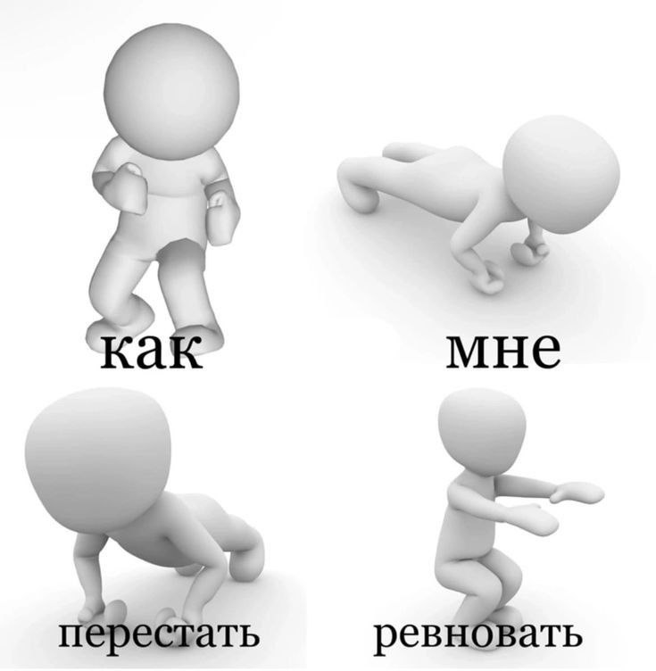

Вопросы от людей, которые чувствуют себя сейчас неважно:
1. Как я могу научиться принимать и любить себя таким, какой я есть?
Этот вопрос требует большого внимания к себе. Лучше всего начать с простого: начните лучше узнавать самого себя. Задавайте вопросы о своих ценностях, мечтах или страхах. Подумайте, что делает вас счастливым и что вам нравится делать. Важно понять, что вы имеете право на своё мнение и свои взгляды, которые могут отличаться от чужих. Практикуйте самоуважение: уважайте себя как личность и цените каждое своё достижение, даже если оно совсем маленькое. Также будьте добры к себе, не критикуйте свои неудачт слишком сильно, ведь у каждого есть право на ошибку. Вместо этого обдумайте проблему, которая не дала вам выполнить цель успешно и можете даже поискать возможность для роста и развития. Не забывайте, что принятие и любовь к себе - долгий процесс, который требует терпения.
Помимо работы с самим собой, я советую обратиться к профессионалам и проработать с ними данный вопрос.
2. Стоит ли мне обращаться за помощью хоть к кому-то?
Обязательно стоит, даже если вы думаете, что всё не так уж и плохо. Если у вас и имеются расстройства, то на начальных стадиях работать с ними будет намного проще. Обращаться стоит к специалистам в области психического здоровья, они смогут оценить ваше состояние и предложить наиболее подходящее лечение, которое может включать в себя различные подходы.
3. Я боюсь столкнуться с негативной оценкой от окружающих, что делать?
Страх перед негативными оценками окружающих может сильно влиять на поведение и самоощущение, поэтому я составила небольшой список советов, которые смогут помочь вам справиться с этим страхом:
✧ Не сравнивайте себя с другими людьми. Всегда помните, что каждый человек уникален и имеет свои сильные стороны.
✧ Работайте над уверенностью в себе. Уверенность - ключевой фактор для преодоления страха перед всем, чем угодно. Практикуйте позитивное мышление, хвалите себя за люббые достижения и напоминайте себе о своих сильных сторонах. Не бойтесь выносить свои результаты в массы, это наоборот поможет вам в практике своей уверенности.
✧ Определите источник страха. Попробуйте понять, почему вы боитесь негативных ценок от общества. Определение источника страха поможет вам лучше понять его причины, а после начать их прорабатывать.
✧ Всегда помните, что мнение других людей не определяет вашу ценность. Несомненно, важно иногда спрашивать мнение со стороны, но ваше мнение должно всегда стоять на ступень выше и иметь больший вес в принятии каких-либо решений.
✧ Практикуйте открытое общение. Такой формат общения с людьми поможет избежать многих недопониманий и конфликтов. Если вы чувствуете, что кто-то критикует вас и ваши действия, явно начиная делать это только в негативном ключе - попробуйте поговорить с этим человеком открыто и честно. Поинтересуйтесь, почему собеседник ведёт себя так по отношению к вам.
✧ Учитесь принимать конструктивную критику в свой адрес. Не вся критика направлена на то, чтобы заставить почувствовать вас неловко. Если ваш собеседник и вправду указывает вам на что-то, что стоило бы поменять, и приводит весомые аргументы - прислушайтесь, а возможно и согласитесь с этими словами. Конструктивная критика поможет вам совершенствовать самого себя.
4. Не могу отпустить важного для меня человека, как бороться с этим?
Скорее всего, вы находитесь в сильной эмоциональной зависимости от этого человека: он дорог для вас и вы боитесь его потерять. Вам стоит проанализировать свои чувства и понять, почему вы так привязаны к нему. Всегда помните, что люди приходят и уходят, это вполне нормальное явление, поэтому не стоит зацикливаться только на одном человеке. Если же вы понимаете, что ваша привязанность к этому человеку мешает вашей жизни, то стоит обратиться за помощью к психологу или психотерапевту. Они помогут вам разобраться в этой ситуации полностью и облегчат проживание похожих суитаций в дальнейшем.
5. Как избавиться от стесненися и мыслей о том, что я навязвивый?
Стеснительность может быть связана с низкой самооценкой, неуверенностью в себе, страхом оценки со стороны окружающих. Чтобы избавиться от этих чувств, нужно работать над повышением самооценки и уверенности в себе. Можно использовать различные техники, такие как позитивные утверждения, медитацию, упражнения на развитие социальных навыков. Также полезно общаться с людьми, которые поддерживают и ценят вас. Важно понимать, что никто не может контролировать чужие мысли и чувства. Поэтому не стоит переживать о том, что вы можете показаться навязчивым другим людям. Главное — быть вежливым и уважительным в общении с окружающими.
6. У меня частые приступы апатии, с чем это связано и что можно сделать, чтобы помочь себе самостоятельно?
Апатия может быть симптомом целого ряда расстройств, поэтому для начала стоит обратиться к специалисту. Он проведёт обследование, уточнит диагноз и назначит необходимое лечение. Самостоятельно лишь стоит изучить информацию о вашем состоянии, позаботиться о гигиене сна, правильном питании и физической активности.

7. Я часто испытываю ревность даже по отношению к своим друзьям, как это можно решить?
Ревность может быть сложным чувством, которое может возникнуть по разным причинам. Для ответа на этот вопрос также приведу список способов, которые помогут справиться с ревностью:
✧ Общайтесь со своими друзьями. Откройте им свои чувства и поделитесь своими переживаниями. Возможно, они смогут дать вам объяснение по поводу ваших переживаний, которое поможет вам успокоиться. Если же такого не произойдет, то попробуйте найти компромисс со своими друзьями, чтобы чувство ревности возникало как можно реже.
✧ Разберитесь в причинах своей ревности. Что именно вызывает у вас эти чувства? Это может быть связано с травмирующим опытом в дружбе или отношениях, низкой самооценкой или страхом потери. Уделите этому пункту как можно больше времени, ведь помимо ревности вы можете решить и другие проблемы в себе.
✧ Практикуйте благодарность. Вместо того чтобы сосредотачиваться на негативных чувствах, попробуйте сосредоточиться на положительных аспектах ваших отношений. Цените моменты, которые вы проводите вместе со своими близкими людьми.
✧ Обратитесь за профессиональной помощью. Да, этот пункт встречается почти в каждом ответе на вопросе, но помимо самопомощи всегда стоит помнить о специалистах в области психологии. Если вы чувствуете, что не можете справиться с ревностью самостоятельно, обратитесь к психологу или психотерапевту. Они могут помочь вам разобраться в причинах вашей ревности и предложить эффективные стратегии для ее преодоления.
8. Часто снятся плохие сны, это как-то связано с моим нынешним состоянием? Как я могу улучшить качество своего сна?
Плохие сны могут быть связаны с различными факторами, включая стресс, тревожность и депрессию. Если вы страдаете от подавленного состояния, то плохие сны могут быть одним из симптомов вашего психического здоровья.
Чтобы улучшить качество своего сна, следует соблюдать следующие рекомендации:
✧ Создайте комфортные условия для сна: тихая комната, удобный матрас и подушка, прохладная температура воздуха.
✧ Соблюдайте режим дня: старайтесь ложиться спать и вставать в одно и то же время каждый день.
✧ Избегайте употребления кофеина, алкоголя и никотина перед сном.
✧ Выполняйте расслабляющие процедуры перед сном: чтение книги, принятие горячей ванны или душа.
✧ Физическая активность в течение дня также может помочь улучшить качество сна.
✧ Используйте технику "4-7-8", которая заключается в глубоком дыхании через нос на счет четыре, задержке дыхания на счет семь и выдохе через рот на счет восемь.
✧ Если плохие сны продолжают беспокоить вас, обратитесь к врачу-сомнологу для консультации и лечения.
9. Что делать, если мне одиноко?
Одиночество — естественное чувство, которое периодически испытывают все люди.
Однако если оно становится постоянным спутником, это может говорить о проблемах в социальной сфере. Возможно, вам не хватает общения. Тогда стоит расширить круг знакомств, записаться в клуб по интересам или заняться каким-либо видом спорта. Другой причиной может быть неудовлетворённость жизнью, в таком случае необходимо пересмотреть свои ценности и приоритеты. Не бойтесь менять себя и свои интересы, ведь так будет намного проще справиться с чувством одиночества.